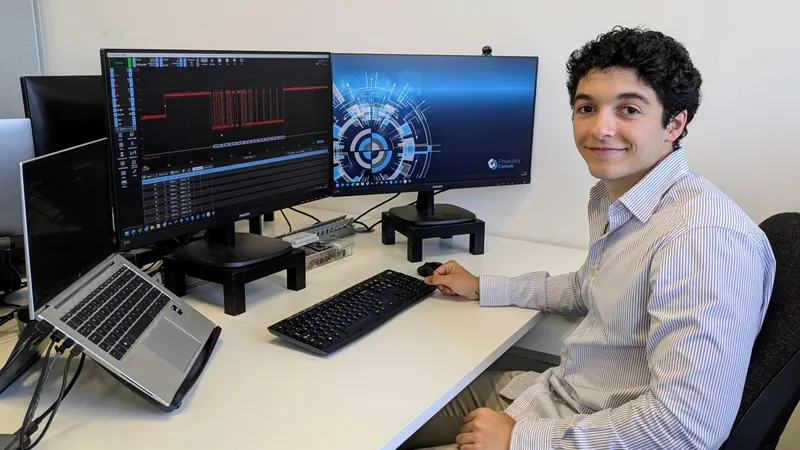

AerospaceSTM32 · FreeRTOS
Embedded software for experimental payloads on a UK satellite mission.
Payload firmware developed to ECSS standards, bare-metal and on FreeRTOS, with RS485, CAN, SPI and UART links and sensor fusion. Verified on a dedicated bench rig with logic analysers.

STM32FreeRTOSCC++
Bare-metalRS485CANSPI
UARTSensor fusionECSS
Bench testingLogic analysers
Featured on Space East →